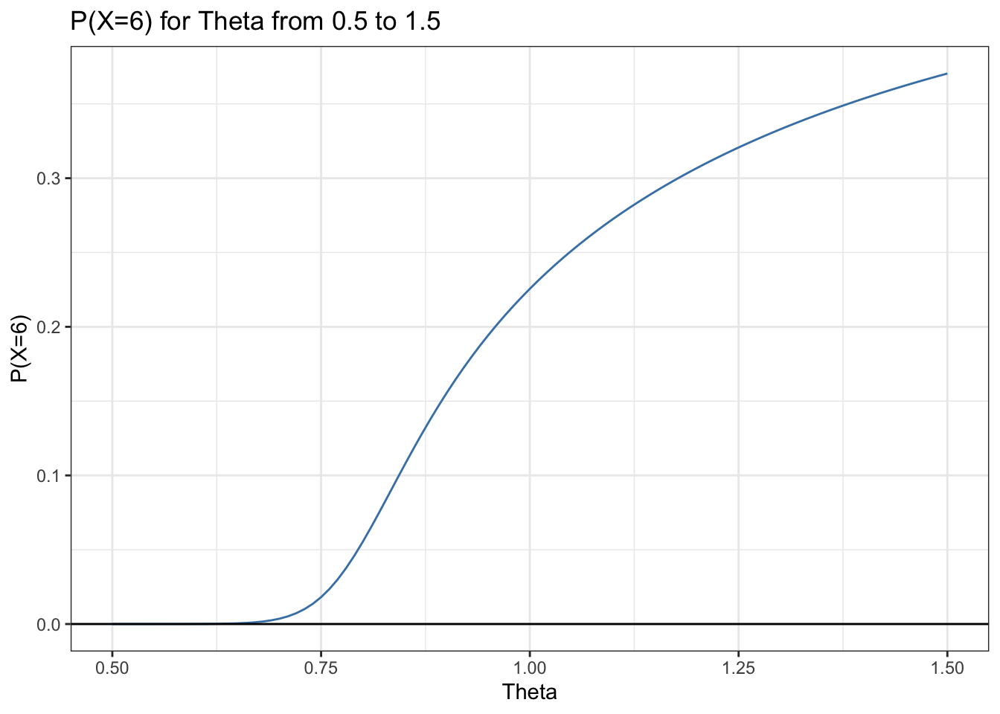

Complete the tasks below. Make sure to start your solutions in on a new line that starts with “Solution:”.
Make sure to use the Quarto Cheatsheet. This will make completing and writing up the lab much easier.
Make sure to use “enter” to make your code readable, so it doesn’t run off the page. I switched the Quarto document to automatically render to .pdf, so you can see what you’re submitting by default. You can switch back for the highlighting by moving the html block above the pdf block in the YAML header.
Don’t forget that you can copy-and-paste code when you’re doing something similar as we did in class!
Make sure to plot all computed probabilities. This is good ggplot practice AND will help make sure you don’t make a mistake when computing the probability.
1 Lab 8 Notes
1.1 Altham’s Multiplicative Binomial Distribution
The PMF for Altham’s Multiplicative Binomial Distribution is \[f_X(x) = \frac{1}{c} {n \choose x} p^x (1-p)^{n-x} \theta^{x(n-x)}I(x \in \{0, 1, ..., n\})\] where \[c = \sum_{i=0}^n {n \choose i} p^i (1-p)^{n-i} \theta^{i(n-i)}.\] Just so we start on the same page, I have included my R function for computing probability using this distribution.
2 Altham’s Multiplicative Beta Binomial Distribution
The PMF for Altham’s Multiplicative Beta Binomial Distribution is \[f_X(x) = \left[\int_{0}^1 \left(\frac{1}{c} {n \choose x} p^x (1-p)^{n-x} \theta^{x(n-x)}\right)\left(\frac{\Gamma(\alpha+\beta)}{\Gamma(\alpha)\Gamma(\beta)} p^{\alpha-1}(1-p)^{\beta-1}\right) dp\right]I(x \in \{0, 1, ..., n\})\]
Just so we start on the same page, I have included my R function for computing probability using this distribution.
Code
daltbbinom.single <-function(x, size, alpha, beta, theta){ integrand <-function(p) {sapply(p, # integrate will pass in a vector, so we use sapply to apply the followingfunction(p_val){# f(x|p) * f(p|alpha, beta)daltbinom(x, size, p_val, theta) *dbeta(p_val, alpha, beta) } ) }# Probability Mass at x=x# integrate(integrand, lower = 0, upper = 1)$value * (x>=0)*(x<=size)# I shrink the bounds below to avoid log(0)=-infinty# I use try() to catch when there is an error and avoid crashing res <-try(integrate(integrand, lower =1e-7, upper =1-1e-7)$value * (x>=0)*(x<=size), silent =TRUE)# If there is an error, return a near-zero probabilityif(inherits(res, "try-error")) return(0.1^6) res}# Write a function that works on a vectordaltbbinom <-function(x, size, alpha, beta, theta){sapply(X=x, FUN=daltbbinom.single, size=size, alpha=alpha, beta=beta, theta=theta)}
3 Question 1
In Lab 8, we use Altham’s Multiplicative Binomial Distribution. Your job was to interpret the impact of \(\theta\) in that equation. In this lab, we will model the number of legs won in a best of eleven (first to six) match.
To help us think about the interpretation, something that was challenging before, let’s try something a little more manageable.
3.1 Part a
Suppose a player has a 50% chance of winning a specific leg, that is let \(p=0.50\). Let’s look at the probability they win (\(x=6\)) legs in the match. Compute this probability over a sequence from \(\theta=0.5\) to \(\theta=1.5\) and plot it using a line where the \(x\)-axis is \(\theta\) and the \(y\)-axis is \(P(X=6)\).
Solution:
Code
#computing probabilitiesp =0.5thetas =seq(from=0.5,to=1.5,by=0.01)probabilities =daltbinom(x=6,size=11,prob=p,theta=thetas)#creating data for plotsggdat =tibble(theta = thetas,probs = probabilities)#plot ggdat |>ggplot(aes(x = theta, y = probs)) +geom_line(color ="steelblue") +geom_hline(yintercept =0) +ylab("P(X=6)") +xlab("Theta") +ggtitle("P(X=6) for Theta from 0.5 to 1.5") +theme_bw()

3.2 Part b
Now, plot Altham’s Multiplicative Binomial Distribution under the same parameters with \(\theta=0.50\), \(\theta=1\), and \(\theta=1.5\). Use ncol=1 in facet_wrap() to plot the PMFs in a single column for comparing.
What is your best assessment of what \(\theta\) is doing in this setting. Consider when a 6-0 blowout is most likely, and when a 5-6 nail-biter is most likely. Note here we should treat the match as a fixed \(n=11\) as we did for \(n=3\) in Lab 8. Note: In lab 8, we saw that small \(\theta\) meant wins came in bunches (clumped together), so there were more 2-0 wins in a best of three series.
Solution: It appears as though the parameter \(\theta\) directly affects the shape of the PMF. Low values of \(\theta\) cluster outcomes/successes toward extreme scenarios (“sweeps”). Larger values for \(\theta\) appear to do the opposite, clustering outcomes toward the center and reducing the likelihood of these sweeps occurring. Therefore, 6-0 blowouts are more likely for lower \(\theta\), while 5-6 nail-biters are more likely for larger \(\theta\). Based on this, I assume that \(\theta\) must model momentum, with smaller \(\theta\) increasing the effect of momentum on each subsequent round and vice versa.
4 Question 2
4.1 Part a
Altham’s Multiplicative Binomial Distribution does not typically simplify to the clean \(E(X)=np\) seen in the Binomial distribution, unless \(\theta = 1\). Write out the expression that would need to be solved to find \(E(X^k)\), and then write a function that computes it given the proposed parameter values \(p\) (prob) and \(\theta\) (theta).
Solution: The expression that would need to be solved to find \(E(X^k)\) is the following: \[ E(X^k) = \sum_{x=-\infty}^{\infty} x^kf_{X}(x) \]
Note that it doesn’t matter if the sum’s lower limit is \(-\infty\), \(0\), or any value in between. This is because the PMF \(f_{X}(x)\) includes an indicator function, \(I(x \in \{0, 1, ..., n\})\), that forces the PMF to equal \(0\) for any \(x\) outside of the specified support. When evaluating this computationally, we will exclusively sum over the support.
Describe how you can use your answer to part a to find Method of Moments estimates for the parameters \(p\) and \(\theta\) for Altham’s Multiplicative Binomial Distribution based on data.
Solution:
To find parameters using our data and our Method of Moments function, we can build a function that takes in a vector of parameters and the data. The first thing this function will do is extract the parameters (\(p\) = par[1] and \(\theta\) = par[2]) using vector indexing. Then, it will calculate the first two sample moments m1\(= \overline{x}\) and m2\(= \overline{x^2}\) (mean(x), mean(x^2). Note that only the first two moments are needed for Altham’s Multiplicative Binomial Distribution because there are only two unknown parameters. After this, we write expressions for the theoretical population moments E1\(= E(X)\) and E2 = \(E(X^2)\) as functions of the parameters. Then, we end the function by returning a vector for which the entries are E1-m1 and E2-m2.
After creating this function, we obtain our Method of Moments estimates using nleqslv::nleqslv with an initial guess for our parameters, the function we just defined, and the data. The solver will then do all the computational work for us and produce parameters that make both E1-m1 and E2-m2 as close to 0 as possible.
4.3 Part c
Write a function that computes the log-likelihood for Altham’s Multiplicative Binomial Distribution, given data (x) and proposed parameter values \(p\) (prob) and \(\theta\) (theta). Note that parameter values are inputted as a vector (\(p\) = par[1], \(\theta\) = par[2]) to agree with the input structure of optim(), which we will later use to obtain our maximum likelihood estimates.
We also include an ifelse() statement that returns the negative log-likelihood function when mle is true. The reasoning for this is explained in part d.
Solution:
Code
llaltbinom =function(par, x, n, mle=F){ p =ifelse(mle, 1/(1+exp(-par[1])), par[1]) theta =ifelse(mle, exp(par[2]), par[2]) ll =sum(log(daltbinom(x = x, size = n, prob = p, theta = theta)))ifelse(mle, -ll,ll)}
4.4 Part d
Describe how you can use your answer to part c to find Maximum Likelihood estimates for the parameters \(p\) and \(\theta\) for Altham’s Multiplicative Binomial Distribution based on data.
Solution:
We can use the optim() function, which finds a function’s minimum. To do this, we call optim() with the arguments par (vector containing initial guesses for parameters \(p\) and \(\theta\)), fn (= llaltbinom), x (the column of data we are interested in), and specify mle = T. This last step is crucial; if we want to use optim() to find a maximum, we minimize the negative log-likelihood, which is the equivalent to maximizing the log-likelihood.
5 Lab 10
Peter “Snakebite” Wright is a two-time Professional Darts Corporation World Champion (2020, 2022) and a former World No. 1. He is one of the sport’s most decorated players, winning nearly 50 PDC titles including the World Matchplay, UK Open, and multiple European Championships.
In 2024, he made The Premier League – a league involving the eight best players that runs every Thursday night from February to May. In this season, he won two of eighteen matches, securing only four points. The spread in legs won was -43, meaning he lost 43 more legs than he won. This performance was rather quite bad. He was soundly trounced in almost all his match ups.
The 2024 standings are below:
Rank
Player
1
Luke Littler
2
Luke Humphries
3
Michael van Gerwen
4
Michael Smith
5
Nathan Aspinall
6
Rob Cross
7
Gerwyn Price
8
Peter Wright
5.1 Summarize the 2024 Data
In pdc2024.csv, I have provided the data for the 2024 Premier League season. There are a few data cleaning steps to consider.
Remove any matches with no Score (e.g., a bye or walkover)
Nights 1 through 16 are best of 11 (first to 6), but the playoffs are extended. For consistency, keep nights 1 through 16 only.
Make two columns WinnerLegs and LoserLegs that keep track of the number of legs each player has won
Summarize the data. What do the data tell us about the breakdown of the results?
Interpretation of Results: The numerical summary tells us that the median leg difference in each match is 2 and that the middle 50% of matches (IQR) are between 1-leg wins and 3-leg wins. We analyze median and IQR in place of mean and standard deviation due to the data’s right skewness (skewness = 0.374). The shape of the barplot shows us how most matches are close competitions, with zero blow-outs and very few “beat-downs”, so to speak.
5.2 Altham’s Multiplicative Binomial Distribution
For each player in the 2024 season, use the number of legs won in each match to compute maximium likelihood estimates for \(p\) and \(\theta\). Note: The “for each” here can be done more efficiently with a function or a loop!
Create a vector containing the number of legs won by the player. Note sometimes you will need to pull from winner’s legs and sometimes from the loser’s legs.
Find the MLE for the player using this data. Ensure to report \(p\) and \(\theta\) for each player in a nicely formatted table. Note: In Lecture on Monday, we used transformations to restrict how optim() searches the parameter space. For example, here, you might consider p <- 1/(1+exp(-par[1])) and theta <- exp(par[2]).
Make comments about the MLEs in the context of the standings.
Solution:
Code
#obtain unique list of player names to loop overplayers =unique(c(pdc.dat$Winner,pdc.dat$Loser))#preallocated tibble to store MLE estimates results =tibble(Player = players,p =NA,theta =NA )for(i in1:length(players)){ won = pdc.dat |>filter(Winner==players[i])#head(won) lost = pdc.dat |>filter(Loser==players[i])#head(lost) leg.counts =c(won$WinnerLegs, lost$LoserLegs)#building MLE params =c(0,0) # initial guesses mle =optim(par=params,fn=llaltbinom,x=leg.counts,n=6,mle=T) p.mle =1/(1+exp(-mle$par[1])) theta.mle =exp(mle$par[2]) results$p[i] = p.mle results$theta[i] = theta.mle}results
# A tibble: 8 × 3
Player p theta
<chr> <dbl> <dbl>
1 Rob Cross 0.610 0.741
2 Gerwyn Price 0.610 0.763
3 Michael Smith 0.629 0.693
4 Luke Littler 0.692 0.677
5 Michael van Gerwen 0.618 0.674
6 Luke Humphries 0.669 0.665
7 Nathan Aspinall 0.690 0.775
8 Peter Wright 0.539 0.832
Interpretation: Each value for p represents the players win probability for a given leg, therefore players with higher values for p are more likely to win legs in a given match. Theta in this context represents how each leg affects the subsequent leg. Because all players have theta values below 1, we can say that all players tend toward more balanced wins and losses/closer final scores.
Knowing this, we can see that Luke Littler has the highest chance of winning any given leg due to his having the highest p value. We can also observe that Luke Humphries, despite not having the highest p value, has the lowest theta value. This means that he experiences more back-and-forth leg victories and losses.
With regard to the standings, we find that p doesn’t 100% map to the rankings as consistently as one might expect. For example, Luke Humphries was ranked second and has a p value of 0.669, whereas Nathan Aspinall has a greater p value of 0.690 despite being ranked 5th place. Regardless, it still does a good job at roughly predicting the rankings.
5.3 Altham’s Multiplicative Beta Binomial Distribution
For each player in the 2024 season, use the number of legs won in each match to compute maxmium likelihood estimates for \(p\) and \(\theta\). Note: The “for each” here can be done more efficiently with a function or a loop!
Create a vector containing the number of legs won by the player. Note sometimes you will need to pull from winner’s legs and sometimes from the loser’s legs.
Find the MLEs for the player using this data. Ensure to report \(\alpha\), \(\beta\), and \(\theta\) for each player in a nicely formatted table. Note 1: Due to the computational complexity of integrate(), you should compute the logged probability for 0:6 once and add them according to the data in each player’s vector. Note 2: In Lecture on Monday, we used transformations to restrict how optim() searches the parameter space.
Plot the underlying Beta(\(\alpha\), \(\beta\)) distribution for each player. Note: Add the mean and variance of the Beta to the table of MLEs. Recall \[\begin{align*}
E(X) &= \frac{\alpha}{\alpha+\beta}\\
sd(X) &= \sqrt{\frac{\alpha\beta}{(\alpha+\beta)^2(\alpha+\beta+1)}}
\end{align*}\]
Make comments about the MLEs in the context of the standings. Note: The players alternate who throws first in a leg has the mathematical “head start” to reach a finish before their opponent can take another turn. Players alternate who throws first with each leg.
# A tibble: 8 × 6
Player alpha beta theta beta.mean beta.sd
<chr> <dbl> <dbl> <dbl> <dbl> <dbl>
1 Rob Cross 0.795 0.210 1.66 0.791 0.287
2 Gerwyn Price 0.892 0.260 1.64 0.774 0.285
3 Michael Smith 0.851 0.149 1.51 0.851 0.252
4 Luke Littler 1.95 0.137 1.46 0.935 0.141
5 Michael van Gerwen 0.740 0.133 1.50 0.848 0.263
6 Luke Humphries 3.02 0.425 0.978 0.877 0.156
7 Nathan Aspinall 1.89 0.215 1.64 0.898 0.172
8 Peter Wright 5.51 4.33 0.951 0.560 0.151
Comments: The mean of beta represents the average win probability. For example, Rob Cross’ average win probability is 0.791 in this model. The standard deviation of beta represents the variability of their leg winning probabilities. The standard deviations are all roughly similar, with the range being from 0.151 to 0.287. Interestingly, we see that Peter Wright, the worst ranked player and the one with the lowest beta mean, has one of the lowest beta standard deviations. Therefore, we can say that he was consistently bad.
Interestingly, most players in this model have theta values greater than one, indicating more momentum/interdependence between legs with each match.
With regard to the standings, we notice that the mean of beta also maps roughly to the rankings, with clearer differences between top and bottom players than in the regular Altham Binomial model. That is to say, players with higher mean values for beta tend to be higher in the ranking.
5.4 Executive Summary
Summarize the work you’ve done here to provide a brief (200-300 word) data-driven summary of the 2024 Premier League season using your work in Lab 10. Your summary should be professional, clear, and all claims should be corroborated with statistical support.
Response: The 2024 PDC Premier League’s regular season took place over 16 nights, with eight of the World’s best dart players competing in best of 11 matches. With these data, we were able to count the number of legs won in each match for a given player. We first obtain a high-level numerical summary and data visualization for general information regarding the season. The median match ended with a score differential of 2, meaning a final scoreline of 6-4. This, in combination with an IQR of 2, demonstrates how many of the matches during this season were relatively close, with limited blow-out matches.
After obtaining this initial overview of the season, we then use the data to fit two models for identifying players’ skill levels. The first of these two models is Altham’s Multiplicative Binomial Distribution, which estimates a players per-leg win probability (\(p\)) and per-match leg dependence (\(\theta\)). In this model, Luke Littler had the highest win probability (\(p=0.692\)) and Peter Wright had the lowest (\(p = 0.539\)). However, this model was not perfect in its assessment, as 5th place Nathan Aspinall had a higher win probability. Also of note is that \(\theta < 1\) for all players in this model, suggesting that within each match, legs tended to be negatively correlated/flip-flop.
We then analyze the season using Altham’s Multiplicative Beta Binomial Distribution. In this model, \(p\) is no longer fixed, but instead variable across matches. The average probabilities in this model differed significantly from before, with clearer separation between high and low-ranked players (Littler = 0.935, Wright = 0.560). Interestingly, the \(\theta\) values found by this model were majority greater than 1, indicating that matches featured momentum rather than flip-flopping.
Despite the slightly different outcomes, the player assessments made by each model align with the 2024 PDC Premier League ranking.